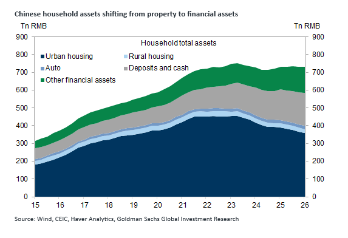

什么原因
Quote
Maciej Kalwasiński
@MKalwasinski
For five years, the Chinese have not been getting richer
Between 2015-21, the wealth of the Chinese doubled; since then, it has stopped growing
Striking chart from Goldman Sachs
6:09 AM · Jun 24, 2026
